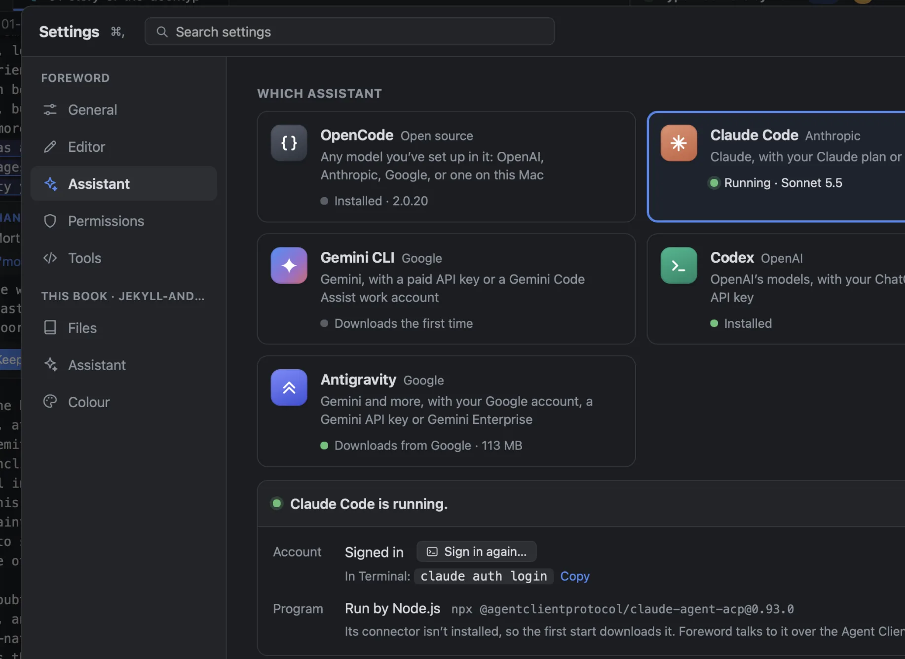
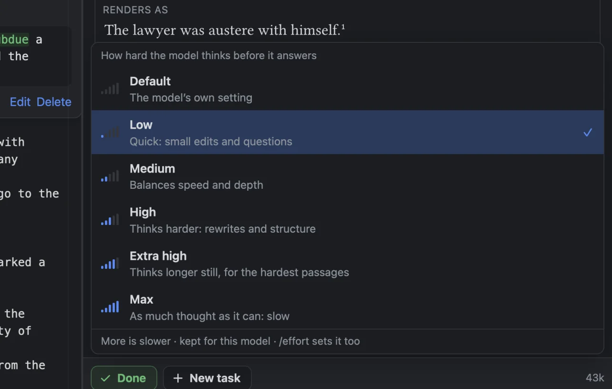

The five
- OpenCode
- Open source. Runs any model you’ve set up in it: OpenAI, Anthropic, Google, or one on your Mac. It comes inside Foreword, so it works with nothing else installed (it still needs a model to talk to).
- Claude Code
- Anthropic’s. Claude, with your Claude plan or an API key.
- Codex
- OpenAI’s. Its models, with your ChatGPT plan or an API key.
- Gemini CLI
- Google’s. Gemini, with a paid API key or a Gemini Code Assist work account. It stopped taking personal Google logins in June 2026.
- Antigravity
- Google’s newer one: Gemini and more, with your Google account, a Gemini API key or Gemini Enterprise. Settings downloads Google’s connector for it (113 MB), and keeps it only if both programs are signed by Google.
Settings ▸ Assistant shows each one’s state without starting anything: Installed · 2.0.20, Signed in with ChatGPT, Not signed in, Needs Node.js. Foreword reads that from where each program keeps it, for example claude auth status or Codex’s auth.json. To sign in, Sign in in Terminal opens Terminal with the right command already running (claude auth login, codex login, …) and a note saying what to do. Come back to Foreword and the assistant restarts on its own.
How Foreword talks to them
OpenCode runs as a local server: Foreword starts opencode serve on a free port on your Mac, with a password made fresh each time, and talks to it over HTTP.
The other four are spoken to over the Agent Client Protocol (ACP), the protocol the Zed editor made for this and JetBrains’ IDEs also use. Foreword chose it because in ACP the assistant asks the app before it acts, which is exactly what Foreword’s permission cards need. Each runs through its connector: claude-agent-acp, codex-acp, gemini --acp, and Google’s antigravity-acp. The versions are pinned, so a connector update can’t break the conversation without warning.
Both paths look the same from the chat. Tasks, queued messages, Stop and Resume work the same whichever assistant you choose.
What Foreword adds to every one
- Instructions for a book, not a codebase. One sentence per line. Never compile (the preview does that). Read files with the read tool, not
sedorhead. Say what changed in one to three sentences. Write maths as Typst maths. Don’t write scripts or build tooling. - The book’s style guide, in every conversation.
- Its own modes: Write, Ask, Discuss, Options and Figures, enforced by Foreword’s rules, not the assistant’s own modes.
- One question panel for all five, whatever their own way of asking.
- Every step in words, whichever tool the assistant used.
- Permissions that are Foreword’s, not each assistant’s.
- Seven tools of Foreword’s own, served to the assistant over MCP on your Mac only: read the settings, change them, list models, set the model, switch assistant, set the mode, open Settings.
Model and effort
Under the message box: the assistant, the model, and how hard it thinks. Effort matters as much as the model for speed and quality, so it gets its own menu, with a meter for each level. Claude Code has Default, Low, Medium, High, Extra high and Max. Codex has its reasoning-effort levels, and OpenCode a model’s variants. The level is kept per model. Every reply’s byline records the model and effort that turn actually ran with: “Claude Code · Sonnet 5.5 · low effort”.

/model sonnet, /effort high and /assistant codex do the same from the message box.
Or ask for it
“Switch me to Claude Code with its default model, on high effort.” The assistant has Foreword’s tools for this. Under the default permissions it asks you first, then the switch happens when its reply ends, so the turn isn’t cut off. The new conversation opens with a line saying what happened: “Claude Code is the writing assistant now (model Default, effort High), as you asked. This is a new conversation: your last one is kept with Codex, to carry on if you switch back.”
Why bring your own
You already pay for one of these, and you’ve already chosen it. Foreword shouldn’t sell you another subscription, or tie your book to one company’s models. The assistants also improve every few weeks. Running the one you have means Foreword gets better when it does.
The same programs are built for writing code, though, and left alone they behave like it: they compile, write scripts, report in diffs, and keep their own permission rules. Everything in the list above is there to make a coding assistant behave like a writing assistant without losing what it’s good at.
What it doesn’t do
- Foreword has no model of its own. The bundled OpenCode still needs a provider key, or a model running on your Mac.
- One assistant per window at a time. Switching starts a new conversation, and can’t happen mid-turn.
- Gemini CLI and Antigravity haven’t been tested through a signed-in conversation. Claude Code, Codex and OpenCode have.
- Claude Code and Codex via
npxneed Node.js. The first start downloads the connector, which can take a minute.